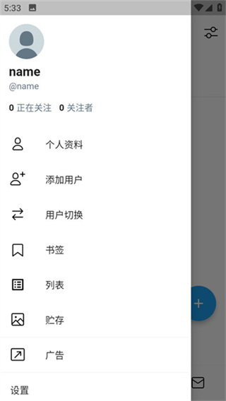
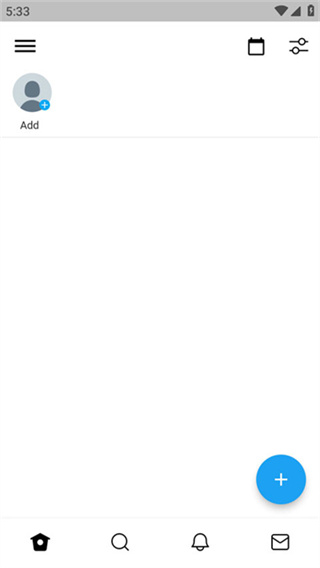

用了大半年 TwiNote，时间线记笔记到底适合谁
从 v1.1 装到现在 v1.4，中间经历了国际版 v6.x 的诱惑。聊聊这个时间线风格笔记 App 在日常使用里哪些地方真的顺了，哪些地方始终别扭。
当初为什么装它
坦白说我记笔记的习惯一直很散：有时候写在备忘录里，有时候拍张照片存相册，还有的时候就直接发个微信文件传输助手存着。装 TwiNote 是因为刷到一条推荐——后来去TwiNote官网看了一下，它的定位就是时间线风格的笔记工具。那会儿正好想找个能把"随手记"这件事稍微规整一下的东西，就下了。
没什么仪式感，从官方下载拿了安装包，下载完登录，点开就是一条空时间线。
越用越顺手的地方：时间线思维真的改了
用了大概三周之后，我发现自己写笔记的方式变了。
以前我写东西总会纠结"这条该放哪个文件夹"，然后越想越复杂，最后干脆不写了。TwiNote 的默认首页就是时间线——最新的笔记在最上面，手指滑一下就看到昨天写了什么、上周写了什么、上个月突然冒出来的那个点子。没有文件夹要选，没有标签要打，写出来就往时间线上一挂，完事。

这个"不用分类直接记"的设计，反而让我记的频率提高了。以前一天能写三五条就不错，现在随手掏出来写个一两句的情况多了——排队的时候、等人的时候、睡前刷到什么想存一下的东西，直接发。
还有个细节是心情标签。每条笔记可以加个表情或者关键词标签，不是为了分组，就是个标记。时间线里扫一眼，那段密集的"焦虑"标签马上能让我想起那阵子在纠结什么。这个功能我原本以为是花架子，现在每次写都会随手加一个。
越用越烦的地方：几个小问题慢慢暴露
用了一两个月之后，有些当初没在意的地方开始觉得别扭。
最大的问题是——没有批量删除。时间线越来越长，翻到半年前发现有一堆临时写的草稿、测试性质的笔记，想清理一下，只能逐条点进去删。我去设置里翻了半天，没找到批量操作的入口。后来才知道目前版本确实不支持，删只能一条条来。官方说过小步快跑，但这个功能到 v1.4 还是没加上。
第二个问题是搜索。它有搜索，也能高亮关键词，但只能搜当前时间线的笔记——如果你给某个角色单独建了分类，搜索框不会跨分类搜。我有时候想找"那天我写过一个关于项目 deadline 的想法"，记不清是写在哪个分类里的，就得每个分类切进去搜一遍。
还有个小槽点：心情标签和评论数、点赞数这些装饰性数字，是可以自定义的。我理解这是给角色扮演类内容用的——模拟社交互动感对吧？但我一个人写碎碎念，这些数字在那里摆着，总觉得有点多余。关不掉。
哪个功能成了每天离不开的：日历视图
说出来你可能不信，日历视图是我用频率仅次于时间线的功能。

它的逻辑很简单：日历上有笔记的日期会有标记，点那天就能看到所有记录。我以前总觉得"日历视图是噱头"——有时间线不就够了？但实际用下来，我发现自己经常会有这种想法："上周三我到底写了啥来着？"时间线要一直往上滑，滑到上周三那段位置得翻好久；日历视图直接点一下就到了。
尤其是月底或者年底做回顾的时候，翻一眼日历上的标记密度，就知道这阵子是记得多还是少了。有标记的日期星星点点，没标记的就是空窗期——这个视觉反馈很直观。
碰都没再碰的：多角色对话
Tw 里它有个挺有意思的功能——多角色对话剧场。你可以给自己创建几个角色，然后模拟这些角色轮流说话的场景，时间线上看到的就是他们"对话"的顺序。后来去TwiNote文档翻了一下，里面写了很多技巧：给不同角色选差异大的图标、控制对话节奏、用旁白笔记分隔……
但我用了两次就没再碰了。不是功能不好，是我真没这个需求。我记笔记的场景就是自己跟自己对话，偶尔想模拟一下不同角色的观点，但写了两条就觉得"这对我来说是多余的"。可能写剧本的、做角色扮演的人会喜欢，但对我这种纯日常记录的人来说，这块功能太重了。
观感修正：当初高估了什么，低估了什么
刚装上的时候我以为："这不就是个长得像 Twitter 的备忘录嘛。"
用了大半年之后我觉得，它真正的优势不是界面风格，而是降低了"开始写"的心理门槛。没有文件夹、没有标签、没有格式要求，就是打开、打字、发布。这个看似简单的设计决策，恰恰是让我坚持用下来的关键。很多笔记应用死在"第一次打开就要设置分类和模板"上——还没写一个字，已经花了十分钟配置。
但我也低估了分类的重要性。时间线虽然好用，但当笔记量超过两三百条之后，"全靠时间线翻"就开始力不从心了。分类入口是 v1.2 才加上的，工作、生活、学习三个默认分类，但我自己的内容可能不止这三类。文档站里提到可以自定义分类入口，我还没仔细折腾过这块。
关于版本的一点小吐槽
TwiNote 有两条版本线这件事我一开始没注意。国内官方站版本号一直停在 v1.4.x，我更新的时候总觉得"这应用怎么这么久才更一次"。后来才发现国际版已经到 v6.8 了，功能多了不少——AI 驱动的角色对话、绘图手写、桌面小部件、导出 txt 和 csv 格式。
国内版更新一直围绕"记录更清楚、更好找、更稳定"——每个版本都在优化高频操作：输入、查找、保存。这种务实的更新节奏挺好的，但有时候看着国际版的功能列表，还是会嘀咕一下。
去留结论
我不会卸载它。
不是因为它完美，而是因为我现在记笔记的习惯已经跟它绑在一起了。打开就是时间线，写一行两秒搞定，日历视图帮我找回了不少差点遗忘的想法。批量删除我可以忍忍（毕竟真要清理也不频繁），搜索的局限我也可以接受（记不清分类的时候就多切几次）。
但有一个信号出现我可能会换：如果我哪天发现"我已经好几天没打开它了"。笔记类应用的最大敌人不是功能不好用，而是被忘记。如果有一天它躺在抽屉里积灰，那就说明它已经不再服务我的日常记录需求了。
文档站的内容也同步维护在几个仓库里，GitHub、Gitee、GitCode 上都能按分类目录找到这套资料，方便不同渠道的人查阅。就目前而言，它还在每天帮我存那些"怕忘了就赶紧写一条"的碎碎念，挺好的。